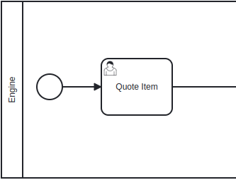
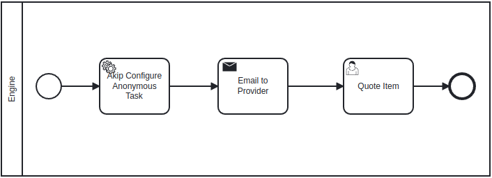
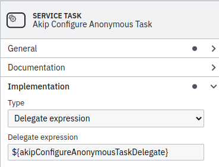
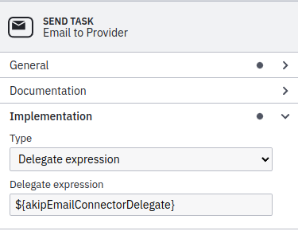
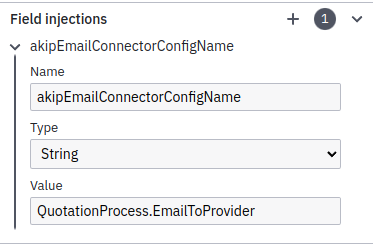
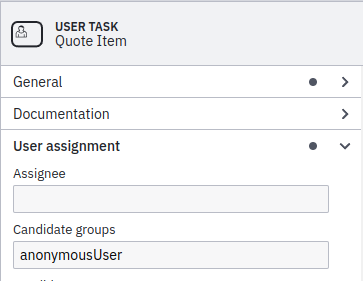
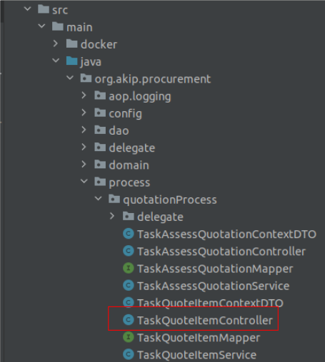
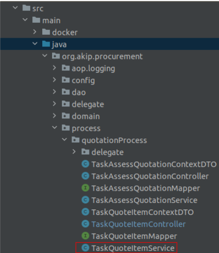
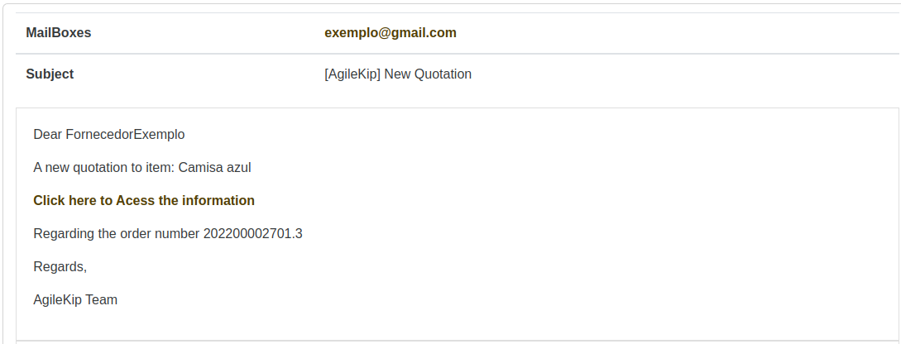

Anonymous Task
What is an Anonymous Task?
Anonymous Task is an activity where we can access a task anonymously, in other words, it will have an email that contains a link to lead you to the task without the need to have an account in the website, accessing as if a guest.
1. Camunda
Initially we need to create a Camunda BPMN to organize our process flow, to this in this tutorial we’ll use the Quote Item example.

The Quote Item, will be our anonymous task, but to turn this activity into an anonymous one we’ll need to include other two tasks before the User Task, being these the Service Task (Akip Configure Anonymous Task) and a Send Task (Email to Provider) that we’ll send a link with a token to access the activity anonymously. This way:

Clicking in the Service Task (Akip Configure Anonymous Task) we must indicate in the delegate section ${akipConfigureAnonymousTaskDelegate} that refers to an existing compiled class in the architecture of reference.

In the Send Task (Email to Provider) we need to first add in Implementation a Delegate expression and the expression ${akipEmailConnectorDelegate} calling a delegate that will be generated with the project referring to a compiled class.

Also in the Send Task (Email to Provider) we must add a field injection, putting the name akipEmailConnectorConfigName, type String and then the value QuotationProcess.EmailToProvider (name of the process dot name of the task)

The last Camunda configuration we need to do is in the User Task Quote Item, adding anonymousUser to the candidate groups.

2. Project Generation
Before we pass to the coding the anonymous task, we need first to install the AgileKIP Generator to execute the project using the jhipster blueprint, after this we need to create the metadata of the domain, entities and their relations. To create the project step by step it’s recommended to read the tutorial here
3. Into the code (backend)
In the code of the generated project, initially we need to find the file Controller related to the task, in our example is TaskQuoteItemController.

It’s indicated that in the Controller, we change the @RequestMapping(“/api/…”) to just @RequestMapping(“/api”), and then in the @GettingMapping and PostMapping use the part that was removed in the @RequestMapping, like this:
@RequestMapping("/api")
@GetMapping("/quotation-process/task-quote-item/{id}")
public ResponseEntity<TaskQuoteItemContextDTO> loadContext(@PathVariable Long id) {
log.debug("REST request to load the context of task hotel {}", id);
TaskQuoteItemContextDTO taskQuoteItemContext = taskQuoteItemService.loadContext(id);
return ResponseEntity.ok(taskQuoteItemContext);
}
After this, for each one of the @GetMapping and @PostMapping we must do copies with some changes, informing the paths that will be public utilized for the Anonymous Task.
In the image below, when we create the copy for each one, we must pass in the start of the URL the “/public” to indicate that this will be a public URL, moreover in the final os the URL we need to write the id of the process instance (processInstanceId) informing the instance of the process, as well as the Token (accessTokenNumber) that will be generated unique for each provider that need to quote items in our case.
@GetMapping("/public/quotation-process/task-quote-item/{processInstanceId}/{accessTokenNumber}")
public ResponseEntity<TaskQuoteItemContextDTO> loadContextPublic(
@PathVariable Long processInstanceId,
@PathVariable String accessTokenNumber
) {
log.debug("REST request to load the context of task hotel {}", processInstanceId, accessTokenNumber);
TaskQuoteItemContextDTO taskQuoteItemContext = taskQuoteItemService.loadContextPublic(processInstanceId, accessTokenNumber);
return ResponseEntity.ok(taskQuoteItemContext);
}
In addition, we must replace the method loadContext to loadContextPublic and pass the two variables of the URL, processInstanceId and accessTokenNumber as parameters. The creation of this method will be done in a step further.
We must change the log.debug, passing again the respective variables, processInstanceId and accessTokenNumber.
Lastly, we use the instance of the service in our task, passing now loadContextPublic and the two parameters, processInstanceId and accessTokenNumber. Following this same logic we gonna create a copy of claim.
@GetMapping("/public/quotation-process/task-quote-item/{processInstanceId}/{accessTokenNumber}/claim")
public ResponseEntity<TaskQuoteItemContextDTO> claimPublic(
@PathVariable Long processInstanceId,
@PathVariable String accessTokenNumber
) {
log.debug("REST request to load the context of task hotel {}", processInstanceId, accessTokenNumber);
TaskQuoteItemContextDTO taskQuoteItemContext = taskQuoteItemService.claimPublic(processInstanceId, accessTokenNumber);
return ResponseEntity.ok(taskQuoteItemContext);
}
When we create the copy of the complete, we only need to change the URL adding the “/public/” in the start, and the name of the method complete to completePublic.
@PostMapping("public/quotation-process/task-quote-item/complete")
public ResponseEntity<Void> completePublic(@RequestBody TaskQuoteItemContextDTO taskQuoteItemContext) {
log.debug("REST request to complete QuotationProcess.TaskQuoteItem {}", taskQuoteItemContext.getTaskInstance().getId());
taskQuoteItemService.complete(taskQuoteItemContext);
return ResponseEntity.noContent().build();
}
With this we finished the necessary changes for the Controller in the Anonymous Task. The next step is to implement the public methods that we create (loadContextPublic, claimPublic and completePublic). To do this we’ll go to the Service located in:

In the Service, we are going to implement the following public methods called in the Controller:
loadContextPublic: As in the image bellow we have a findBy that will be created in the next steps in the Repository file during the process, beyond that the messages in the BadRequestErrorException you can put a specific one respectively, “Invalid accessTokenNumber” and “Task not found”.
public TaskQuoteItemContextDTO loadContextPublic(Long processInstanceId, String accessTokenNumber) {
quotationProcessRepository
.findByProcessInstanceIdAndProcessInstanceAccessTokenNumber(processInstanceId, accessTokenNumber)
.orElseThrow(() -> new BadRequestErrorException("Invalid AccessTokenNumber"));
List<TaskInstance> taskInstances = taskInstanceRepository.findByTaskDefinitionKeyAndProcessInstanceIdAndProcessInstanceAccessTokenNumberOrderByIdDesc(
TASK_QUOTE_ITEM,
processInstanceId,
accessTokenNumber
);
if (taskInstances.isEmpty()) {
throw new BadRequestErrorException("Task not found");
}
var taskInstanceDTO = taskInstanceMapper.toDTOLoadTaskContext(taskInstances.get(0));
QuotationProcessDTO quotationProcess = quotationProcessRepository
.findByProcessInstanceId(processInstanceId)
.map(taskQuoteItemMapper::toQuotationProcessDTO)
.orElseThrow();
var taskQuoteItemContext = new TaskQuoteItemContextDTO();
taskQuoteItemContext.setTaskInstance(taskInstanceDTO);
taskQuoteItemContext.setQuotationProcess(quotationProcess);
return taskQuoteItemContext;
}
claimPublic:
public TaskQuoteItemContextDTO claimPublic(Long processInstanceId, String accessTokenNumber) {
TaskQuoteItemContextDTO taskQuoteItemContext = loadContextPublic(processInstanceId, accessTokenNumber);
if (!taskQuoteItemContext.getTaskInstance().getStatus().equals(StatusQuotation.APPROVED)) {
taskInstanceService.claim(taskQuoteItemContext.getTaskInstance().getId());
}
return taskQuoteItemContext;
}
completePublic:
public void completePublic(TaskQuoteItemContextDTO taskQuoteItemContext) {
quotationProcessRepository
.findByProcessInstanceIdAndProcessInstanceAccessTokenNumber(
taskQuoteItemContext.getQuotationProcess().getProcessInstance().getId(),
taskQuoteItemContext.getQuotationProcess().getProcessInstance().getAccessTokenNumber()
)
.orElseThrow(() -> new BadRequestErrorException("kipappProcurementApp.quotationProcess.error.tokenNotFound"));
complete(taskQuoteItemContext);
}
Next step is defining in the Repository of the process (in my case TaskQuoteItemRepository) this Optional:
Optional<QuotationProcess> findByProcessInstanceIdAndProcessInstanceAccessTokenNumber(Long processInstanceId, String accessTokenNumber);
4. Into the code (frontend)
With the backend organized, we’ll start the frontend accessing the directory:
src > main > webapp > app > entities > name of the process > name of the task
First we open the service.ts of the task, inside we create a const baseApiUrlPublic, similar with the const that already exists baseApiUrl. The unique difference is that between the api and te name of the process we add public staying like this:
const baseApiUrlPublic = 'api/public/quotation-process/task-quote-item';
const baseApiUrl = 'api/quotation-process/task-quote-item';
After this, we create the methods loadContextPublic, claimPublic and completedPublic, where their gets and posts follow the same way that was created in the Controller of the task.
loadContextPublic:
public loadContextPublic(processInstanceId: number, accessTokenNumber: string): Promise<TaskQuoteItemContext> {
return new Promise<TaskQuoteItemContext>((resolve, reject) => {
axios
.get(`${baseApiUrlPublic}/${processInstanceId}/${accessTokenNumber}`)
.then(res => {
resolve(res.data);
})
.catch(err => {
reject(err);
});
});
}
claimPublic:
public TaskQuoteItemContextDTO claimPublic(Long processInstanceId, String accessTokenNumber) {
TaskQuoteItemContextDTO taskQuoteItemContext = loadContextPublic(processInstanceId, accessTokenNumber);
if (!taskQuoteItemContext.getTaskInstance().getStatus().equals(StatusQuotation.APPROVED)) {
taskInstanceService.claim(taskQuoteItemContext.getTaskInstance().getId());
}
return taskQuoteItemContext;
}
completePublic:
public void completePublic(TaskQuoteItemContextDTO taskQuoteItemContext) {
quotationProcessRepository
.findByProcessInstanceIdAndProcessInstanceAccessTokenNumber(
taskQuoteItemContext.getQuotationProcess().getProcessInstance().getId(),
taskQuoteItemContext.getQuotationProcess().getProcessInstance().getAccessTokenNumber()
)
.orElseThrow(() -> new BadRequestErrorException("kipappProcurementApp.quotationProcess.error.tokenNotFound"));
complete(taskQuoteItemContext);
}
When we generate the project and consequently the task that we are configuring, we already have files like details.component.ts, details.vue, execute.component.ts and execute.vue. As we’ll have an anonymous page, we must create public files.
For this we need to copy the details.component.ts and rename to public-details.component.ts. In the component we’ll change the name of the class, create an attribute with the name accessTokenNumber of string type initializing null.
@Component
export default class TaskQuoteItemPublicDetailsComponent extends Vue {
private taskQuoteItemService: TaskQuoteItemService = new TaskQuoteItemService();
private taskContext: TaskQuoteItemContext = {};
private accessTokenNumber: string = null;
In the beforeRouteEnter method, we change the if condition passing the to.params.processInstanceId and the to.params.accessTokenNumber, after alter this we pass the parameter value (to.params.accessTokenNumber) to the variable vm.accessTokenNumber created before, and call the method retrieveContext passing again the to.params.processInstanceId and the to.params.accessTokenNumber.
beforeRouteEnter(to, from, next) {
next(vm => {
if (to.params.processInstanceId && to.params.accessTokenNumber) {
vm.accessTokenNumber = to.params.accessTokenNumber;
vm.retrieveContext(to.params.processInstanceId, to.params.accessTokenNumber);
}
});
}
Inside the retrieveContext method we call the method loadContextPublic passing processInstanceId and accessTokenNumber, finishing the public-details.component.ts.
public retrieveContext(processInstanceId, accessTokenNumber) {
this.taskQuoteItemService.loadContextPublic(processInstanceId, accessTokenNumber).then(res => {
this.taskContext = res;
});
}
Then we must copy the details.vue and rename to public-details.vue, and just change the :to of router-link similar to the URL bellow, being the place where QuotationProcess is, you substitute for the name of your process and then the name of the task, that in this example is TaskQuoteItem. To the typescript that we did before work, we must correct the path to the public-details.component.ts.
<router-link
v-if="taskContext.taskInstance.status == 'NEW' || taskContext.taskInstance.status == 'ASSIGNED'"
:to="`/public/process-definition/QuotationProcess/${taskContext.quotationProcess.processInstance.id}/TaskQuoteItem/${accessTokenNumber}/execute`"
tag="button"
class="btn btn-primary"
data-cy="entityDetailsButton"
>
<font-awesome-icon icon="play"></font-awesome-icon> Execute
</router-link>
</div>
</div>
</div>
</template>
<script lang="ts" src="./task-quote-item-public-details.component.ts"></script>
Next we need to copy the file execute.component.ts and paste renaming to public-execute.component.ts. Then we’ll do changes same as before, rename the class and initiate a variable accessTokenNumber, type string with the value null.
@Component({
validations,
})
export default class TaskQuoteItemPublicExecuteComponent extends mixins(NotifyMixin) {
private taskQuoteItemService: TaskQuoteItemService = new TaskQuoteItemService();
private taskContext: TaskQuoteItemContext = {};
public isSaving = false;
public accessTokenNumber: string = null;
In the beforeRouteEnter we change the condition of the if passing to.params.processInstanceId and accessTokenNumber, then the vm.accessTokenNumber receiving to.params.accessTokenNumber. After call vm.claimTaskInstance passing as parameters again to.params.processInstanceId and to.params.accessTokenNumber;
beforeRouteEnter(to, from, next) {
next(vm => {
if (to.params.processInstanceId && to.params.accessTokenNumber) {
vm.accessTokenNumber = to.params.accessTokenNumber;
vm.claimTaskInstance(to.params.processInstanceId, to.params.accessTokenNumber);
}
});
}
In the claimTaskInstance method we pass processInstanceId and accessTokenNumber as parameters and we’ll replace the call for claim method to claimPublic passing again the same two parameters.
public claimTaskInstance(processInstanceId, accessTokenNumber) {
this.taskQuoteItemService
.claimPublic(processInstanceId, accessTokenNumber)
.then(res => {
this.taskContext = res;
})
.catch(err => {
this.notifyErrorFromResponse(err);
});
}
To finish the public-execute.component.ts in the method complete() we’ll change the method called complete to completePublic, and then where is name we put a name for the route that we’ll register later (remember this), and for the params first we put processInstanceId and accessTokenNumber like the code bellow:
public complete() {
this.taskQuoteItemService.completePublic(this.taskContext).then(res => {
this.$router.push({
name: 'Public_QuotationProcess_TaskQuoteItemDetails',
params: {
processInstanceId: `${this.taskContext.quotationProcess.processInstance.id}`,
accessTokenNumber: `${this.accessTokenNumber}`,
},
});
});
}
Now we finished the component, we copy the execute.vue and rename to public-execute.vue just changing the path in the script to the component work.
<script lang="ts" src="./task-quote-item-public-execute.component.ts"></script>
5. Configuring the routes
With public screens created, we have left just the routes and the link to send you to the anonymous task. We’ll access: src > main > webapp > app > router > entities.ts. Create a const like the example bellow referencing the two public .vue screens that we create before.
// prettier-ignore
const Public_QuotationProcess_TaskQuoteItemDetails = () => import('@/entities/quotation-process/task-quote-item/task-quote-item-public-details.vue');
// prettier-ignore
const Public_QuotationProcess_TaskQuoteItemExecute = () => import('@/entities/quotation-process/task-quote-item/task-quote-item-public-execute.vue');
Now just need to create the two routes with the same name referenced in the const. Important to remember that the name we put here need to be the same as we put in the public-execute.component.ts in the method complete().
{
path: '/public/process-definition/QuotationProcess/:processInstanceId/TaskQuoteItem/:accessTokenNumber/view',
name: 'Public_QuotationProcess_TaskQuoteItemDetails',
component: Public_QuotationProcess_TaskQuoteItemDetails,
},
{
path: '/public/process-definition/QuotationProcess/:processInstanceId/TaskQuoteItem/:accessTokenNumber/execute',
name: 'Public_QuotationProcess_TaskQuoteItemExecute',
component: Public_QuotationProcess_TaskQuoteItemExecute,
}
6. Email content
Finally, we are finishing the configuration for anonymous task. For this you need create the content, mailbox and subject files to organize the email, for more information how to create emails access here.
In the content of the email we just need to create a <p></p> tags where we’ll add the URL that send us to the anonymous page to do the task.
<p>
<a href="${env.getProperty('jhipster.mail.base-url')}/public/process-definition/QuotationProcess/
${processEntity.processInstance.id}/TaskQuoteItem/${processEntity.processInstance.accessTokenNumber}/
view">Click here to Access the information</a>
</p>
As a result we’ll have a screen next to this:

And a link like this:
localhost:9000/public/process-definition/QuotationProcess/2004/TaskQuoteItem/a56a21a714b7ca89298d741ae368c45/view